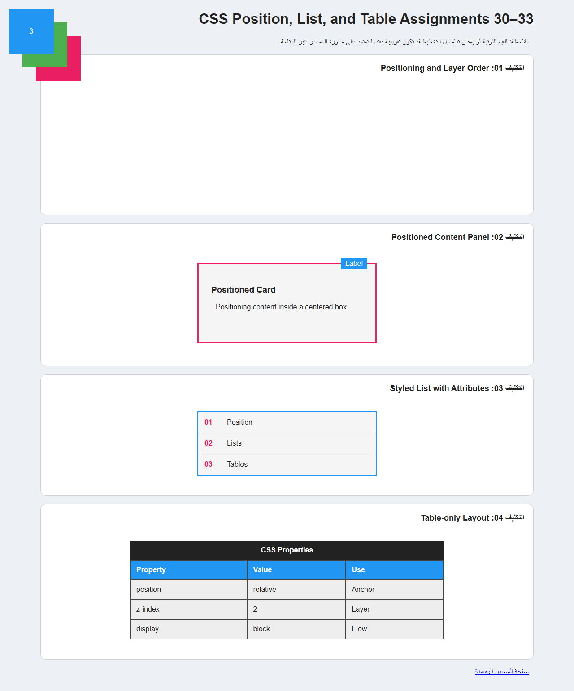

المطلوب في التكليف
استخدم البنية السابقة دون تعديلها. اجعل العناصر مربعة بمقاس 100×100px، واضبط ترتيب الطبقات. يجب أن يبعد العنصر الأزرق 20px من أعلى الصفحة ويسارها.
المصدر الرسمي: https://elzero.org/css-assignments-lesson-from-30-to-33/
المطلوب بجوار HTML المعاينة، ثم مقارنة النتيجة قبل قواعد CSS وبعدها. الشرح العربي من اليمين إلى اليسار، وكل HTML وCSS إنجليزي من اليسار إلى اليمين.
استخدم البنية السابقة دون تعديلها. اجعل العناصر مربعة بمقاس 100×100px، واضبط ترتيب الطبقات. يجب أن يبعد العنصر الأزرق 20px من أعلى الصفحة ويسارها.
المصدر الرسمي: https://elzero.org/css-assignments-lesson-from-30-to-33/
تثبت صفحة التكليف مقاس المربعات 100×100px، وإزاحة المربع الأزرق 20px من الأعلى واليسار، وترتيب الطبقات. البنية السابقة وألوان بقية الأشكال غير ظاهرة في النص المتاح؛ لذلك ألوان المربعات الأخرى والمعاينة توضيحية.
<section class="task" id="task-01">
<h2>التكليف 01: Positioning and Layer Order</h2>
<div class="stage"><div class="stage"><div class="square red">1</div><div class="square green">2</div><div class="square blue">3</div></div></div>
</section>البنية المحلية نفسها قبل إضافة قواعد حل هذا التكليف.
البنية المحلية نفسها بعد تطبيق تنسيق المعاينة.

CSS الكامل لهذا التكليف، مستقل وباتجاه القراءة من اليسار إلى اليمين.
#task-01 .stage {
position: static;
min-height: 280px;
}
#task-01 .square {
position: absolute;
width: 100px;
height: 100px;
display: grid;
place-items: center;
color: #fff;
}
#task-01 .red {
top: 80px;
left: 80px;
background: #e91e63;
z-index: 1;
}
#task-01 .green {
top: 50px;
left: 50px;
background: #4caf50;
z-index: 2;
}
#task-01 .blue {
top: 20px;
left: 20px;
background: #2196f3;
z-index: 3;
}تُخرج المربعات من التدفق العادي بواسطة التموضع المطلق، ثم تحدد قيم الأعلى واليسار مواضعها. يظل الحاوي غير المتموضع بلا مرجع خاص، لذلك يبدأ المربع الأزرق عند إزاحة 20px من حافة الصفحة، وتضع قيمة z-index الأعلى فوق البقية.
#task-01 .stageيستهدف المعرّف ويحصر القاعدة في ذلك العنصر. يستهدف العناصر التي تحمل اسم الفئة في المحدد.
#task-01 .squareيستهدف المعرّف ويحصر القاعدة في ذلك العنصر. يستهدف العناصر التي تحمل اسم الفئة في المحدد.
#task-01 .redيستهدف المعرّف ويحصر القاعدة في ذلك العنصر. يستهدف العناصر التي تحمل اسم الفئة في المحدد.
#task-01 .greenيستهدف المعرّف ويحصر القاعدة في ذلك العنصر. يستهدف العناصر التي تحمل اسم الفئة في المحدد.
#task-01 .blueيستهدف المعرّف ويحصر القاعدة في ذلك العنصر. يستهدف العناصر التي تحمل اسم الفئة في المحدد.
position: statictop: 80pxleft: 80pxz-index: 1min-height: 280pxwidth: 100pxheight: 100pxdisplay: gridplace-items: centercolor: #fffbackground: #e91e63{}تجمع الأقواس قواعد المحدد وتحدد بداية القاعدة ونهايتها.
:تفصل النقطتان بين اسم الخاصية وقيمتها.
;تنهي الفاصلة المنقوطة تصريح CSS.
pxوحدات للمقاس أو النسبة أو الزمن؛ مثل px للبكسل وfr لجزء من المساحة المتاحة.
#task-01 .stage {يستهدف المعرّف ويحصر القاعدة في ذلك العنصر. يستهدف العناصر التي تحمل اسم الفئة في المحدد.
position: static;تختار طريقة التموضع؛ تستخدم هنا لإخراج العنصر من التدفق أو جعله مرجعًا للعناصر داخله.
min-height: 280px;تمنع الارتفاع من النزول عن القيمة المحددة.
}يغلق كتلة قواعد CSS التي بدأها المحدد السابق.
#task-01 .square {يستهدف المعرّف ويحصر القاعدة في ذلك العنصر. يستهدف العناصر التي تحمل اسم الفئة في المحدد.
position: absolute;تختار طريقة التموضع؛ تستخدم هنا لإخراج العنصر من التدفق أو جعله مرجعًا للعناصر داخله.
width: 100px;تحدد عرض العنصر.
height: 100px;تحدد ارتفاع العنصر.
display: grid;تحدد طريقة ترتيب العنصر وأبنائه، مثل Flex أو Grid.
place-items: center;تختصر محاذاة عناصر الخلية أفقيًا وعموديًا.
color: #fff;تحدد لون النص أو المحتوى.
}يغلق كتلة قواعد CSS التي بدأها المحدد السابق.
#task-01 .red {يستهدف المعرّف ويحصر القاعدة في ذلك العنصر. يستهدف العناصر التي تحمل اسم الفئة في المحدد.
top: 80px;تحدد المسافة من أعلى مرجع التموضع.
left: 80px;تحدد المسافة من الحافة اليسرى.
background: #e91e63;تحدد خلفية العنصر، ومنها اللون أو التدرج.
z-index: 1;تحدد ترتيب العنصر فوق العناصر المتداخلة؛ الرقم الأكبر يظهر أمام الأصغر.
}يغلق كتلة قواعد CSS التي بدأها المحدد السابق.
#task-01 .green {يستهدف المعرّف ويحصر القاعدة في ذلك العنصر. يستهدف العناصر التي تحمل اسم الفئة في المحدد.
top: 50px;تحدد المسافة من أعلى مرجع التموضع.
left: 50px;تحدد المسافة من الحافة اليسرى.
background: #4caf50;تحدد خلفية العنصر، ومنها اللون أو التدرج.
z-index: 2;تحدد ترتيب العنصر فوق العناصر المتداخلة؛ الرقم الأكبر يظهر أمام الأصغر.
}يغلق كتلة قواعد CSS التي بدأها المحدد السابق.
#task-01 .blue {يستهدف المعرّف ويحصر القاعدة في ذلك العنصر. يستهدف العناصر التي تحمل اسم الفئة في المحدد.
top: 20px;تحدد المسافة من أعلى مرجع التموضع.
left: 20px;تحدد المسافة من الحافة اليسرى.
background: #2196f3;تحدد خلفية العنصر، ومنها اللون أو التدرج.
z-index: 3;تحدد ترتيب العنصر فوق العناصر المتداخلة؛ الرقم الأكبر يظهر أمام الأصغر.
}يغلق كتلة قواعد CSS التي بدأها المحدد السابق.